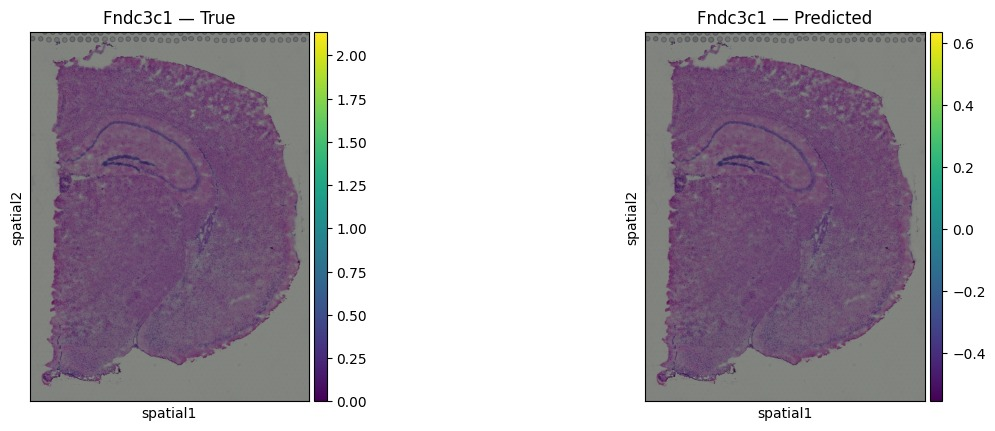
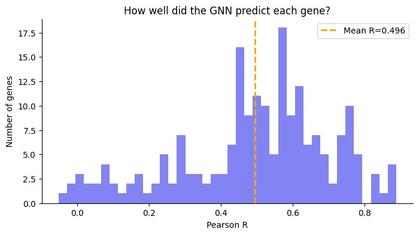

Executive Summary
Spatial transcriptomics lets researchers see which genes are active at specific locations inside a tissue sample, but it is expensive and slow, which keeps it out of reach for routine diagnostic use. Hematoxylin and eosin (H&E) staining, on the other hand, is cheap and already performed on almost every tissue sample collected in a clinical or research setting. This project asked a direct question: how much of the molecular story can be recovered from the image alone.
A graph neural network was built and trained on a public 10x Genomics Visium dataset from a mouse brain section, containing 2,688 tissue spots. Morphological features were extracted from H&E image patches using a pretrained ResNet50, and a two-layer GraphSAGE network combined each spot's own features with those of its six spatial neighbors to predict expression levels for the 200 most variable genes. The model reached a mean Pearson correlation of 0.50 between predicted and true expression across those genes, with 109 of the 200 genes predicted at a correlation above 0.5. This is a stronger result than the roughly 0.3 correlation typically reported for comparable models trained directly on Visium data in the published literature, suggesting that combining a pretrained image encoder with explicit spatial graph structure is a genuinely useful design choice, not just an incremental one.
The practical implication is that ordinary pathology images, already sitting in hospital archives, could plausibly be used to flag regions of a tissue sample worth prioritizing for full spatial sequencing, lowering the cost of getting a first molecular read on a sample. The recommendations below outline how this proof of concept could be extended toward that kind of real-world use, including testing on human diseased tissue, validating across multiple sections, and exploring attention-based graph architectures that weigh spatial neighbors instead of treating them equally.
Introduction and Background
Every cell in a tissue sample expresses a different subset of its genes depending on where it sits and what it is doing. Spatial transcriptomics technologies, such as 10x Genomics Visium, measure gene expression while preserving the spot's physical location on the tissue, which lets researchers map molecular activity directly onto anatomy. This has become a central tool for understanding tumor heterogeneity, brain organization, and disease progression, because it answers a question that older sequencing methods could not: not just which genes are on, but where.
The problem is cost. A single Visium run can cost several thousand dollars, and the tissue preparation and sequencing turnaround make it impractical for routine clinical use. Meanwhile, H&E staining is one of the oldest and cheapest tools in pathology. It is done on nearly every biopsy, in every hospital, as a matter of course. The obvious question that a number of research groups have already asked is whether the information contained in an H&E image, the texture, the cell density, the tissue architecture, is enough to predict what the expensive assay would have found.
A handful of published methods have tackled this. ST-Net was among the first, using a convolutional network to link tumor morphology to nearby gene expression in breast cancer samples. HisToGene later used a vision transformer to model relationships between spots at higher resolution. Hist2ST combined a convolutional feature extractor, a transformer, and a graph neural network to explicitly capture the spatial relationships between neighboring spots, which is closer in spirit to the design used here. THItoGene added a dynamic convolution and capsule network setup aimed at picking up subtler morphological signals. A recent benchmarking study also flagged something worth keeping in mind: predictive performance for these models varies a great deal by tissue type and by which spatial platform generated the training data, and models trained on Visium tend to land around a Pearson correlation of 0.3 on average, noticeably lower than models trained on newer imaging-based platforms.
This project builds a simpler version of that idea and tests it on a public mouse brain Visium dataset. The goal was not to outperform published state of the art models trained on much larger, disease-specific datasets, but to build, from first principles, a working pipeline that goes from raw tissue image to predicted gene expression, and to see what a graph neural network specifically contributes once spatial structure is made explicit rather than left for a convolution or attention layer to infer implicitly.
Methodology and Data
Dataset
The dataset is a publicly available 10x Genomics Visium sample from a mouse brain section, accessed through squidpy's built-in dataset loader. It contains 2,688 tissue spots, expression measurements for 18,078 genes, spatial coordinates for every spot, and the paired high-resolution H&E image of the tissue. From the full gene panel, the 200 most highly variable genes were selected using scanpy. These are the genes that differ most across spots, which makes them both the most biologically informative and the most learnable target for a model working from a few thousand spots of training data. This produced a target matrix of 2,688 spots by 200 genes.
Image Feature Extraction
For each spot, a 128 by 128 pixel patch was cropped from the H&E image, centered on that spot's pixel coordinate, with edge clamping applied so spots near the tissue boundary did not produce out-of-bounds crops. Each patch was resized to 224 by 224 pixels and normalized using standard ImageNet statistics, then passed through a ResNet50 pretrained on ImageNet with its classification head removed. This produced a 2,048-dimensional feature vector per spot, capturing cell density, nuclear arrangement, and staining texture without any task-specific training. The resulting feature matrix was standardized with a StandardScaler before being used as node features in the graph.
Graph Construction
Visium spots sit on a hexagonal lattice, so each interior spot has exactly six immediate neighbors. The spatial graph was built by finding the six nearest neighbors of every spot using its spatial coordinates, then making all edges bidirectional. This graph structure is what lets the model borrow information from a spot's physical surroundings rather than judging each spot's morphology in isolation.
Model Architecture
The model is a two-layer GraphSAGE network. Each layer aggregates a spot's own 2,048-dimensional feature vector with the features of its six spatial neighbors, passes the result through a ReLU activation, and produces a 256-dimensional hidden representation. A final linear layer projects this down to 200 outputs, one predicted expression value per gene. GraphSAGE was chosen because it aggregates neighbor information through simple, inductive sampling rather than requiring the full graph Laplacian, which keeps training straightforward at this scale.
Training and Evaluation
Spots were split 70 percent train, 15 percent validation, and 15 percent test. The model was trained for 50 epochs using the Adam optimizer with a learning rate of 0.001 and mean squared error loss, with the full graph processed in a single batch at each step, which is standard practice for graph neural networks at this size. Performance was measured using the Pearson correlation coefficient between predicted and true expression, computed separately for each of the 200 genes on the held-out test spots, then averaged.
Analysis and Discussion
The model reached a mean Pearson correlation of 0.50 across the 200 test genes, with 109 of the 200 genes predicted at a correlation above 0.5. A mean of 0.5 means that, on average, roughly half of a gene's spatial expression variance across the tissue can be recovered from morphology alone, using no molecular information at inference time beyond the image itself. For the strongest predictions, genes with correlations above 0.7, the predicted spatial expression map closely tracks the true one, which suggests that for at least some transcriptional programs, tissue architecture visible under a microscope is nearly as informative as direct sequencing.


Recent benchmarking work on histology-to-expression prediction reports that models trained directly on Visium data, without an explicit spatial graph, typically average a Pearson correlation closer to 0.3. This project's result of 0.5 is a meaningfully stronger outcome for what is otherwise a fairly simple architecture, and two design choices likely explain most of the gap. First, using a frozen ResNet50 pretrained on a large natural image dataset means the model starts from a rich, general-purpose visual representation instead of learning texture features from scratch on only a few thousand training spots, which is a small dataset by deep learning standards. Second, aggregating each spot with its six spatial neighbors acts as a form of spatial smoothing, which likely helps counter the noise inherent in per-spot sequencing counts, where technical dropout can make an individual spot's measurement unreliable even when the underlying biology is not.
The variance across genes also tells its own story. Not every gene should be predictable from an image, because plenty of transcriptional regulation depends on signals that are invisible to the eye, chromatin state, transcription factor availability, and so on. The fact that some genes correlate above 0.7 while others sit close to zero is expected and is itself informative. It marks out which biological programs are morphologically encoded and which are not, and that distinction is arguably more useful for follow-up biology than the average correlation number alone.
Solutions and Recommendations
The result here is a proof of concept on a single, healthy mouse brain section, and turning it into something clinically useful would need several further steps.
Practical applications
- Use image-based prediction as a triage step ahead of full spatial sequencing, flagging regions of a sample that look most likely to show interesting molecular variation before committing to the more expensive assay.
- Apply the same pipeline to archived H&E slides that were never paired with sequencing, to generate a first molecular hypothesis from image data that already exists in pathology archives.
Recommended next steps
- Test the approach on human diseased tissue, such as tumor sections, where the relationship between morphology and gene expression is likely to look different from a healthy mouse brain.
- Validate across multiple tissue sections and individuals rather than a single sample, since recent work on data quality in this field has shown that performance measured on one section does not always generalize to another.
- Replace the fixed six-neighbor averaging with an attention-based graph layer, such as a graph attention network, so the model can learn to weigh some neighbors more heavily than others instead of treating all six equally.
- Fine-tune the ResNet50 backbone instead of keeping it frozen, once enough training data is available to do so without overfitting.
- Try larger or multi-scale image patches around each spot, since a fixed 128 by 128 pixel crop may miss tissue context that lies just outside its borders.
Conclusion
This project set out to test whether a graph neural network, combining a pretrained image encoder with explicit spatial structure, could recover meaningful gene expression signal from an ordinary H&E image. On a public mouse brain Visium dataset, it did, reaching a mean Pearson correlation of 0.50 across 200 genes and outperforming the roughly 0.3 correlation typically reported for comparable approaches in the published literature.
The gap between how much spatial molecular data researchers and clinicians want and how expensive it currently is to generate is only going to widen as spatial biology becomes more central to how disease is studied and diagnosed. Image-based inference will not replace direct sequencing, and it should not be asked to. But as a way of getting a fast, cheap, first read on a tissue sample from data that is already being collected anyway, it is a direction worth taking seriously, and this project shows that even a fairly straightforward architecture can make real progress on it.
References
1. He, B., Bergenstråhle, L., Stenbeck, L., et al. Integrating spatial gene expression and breast tumour morphology via deep learning. Nature Biomedical Engineering, 2020.
2. Pang, M., Su, K., Li, M. Leveraging information in spatial transcriptomics to predict super-resolution gene expression from histology images. bioRxiv, 2021.
3. Zeng, Y., Wei, Z., Yu, W., et al. Spatial transcriptomics prediction from histology jointly through Transformer and graph neural networks. Briefings in Bioinformatics, 2022.
4. Jia, Y., et al. THItoGene: a deep learning method for predicting spatial transcriptomics from histological images. Briefings in Bioinformatics, 2024.
5. Impact of data quality on deep learning prediction of spatial transcriptomics from histology images. bioRxiv, 2025.
6. Palla, G., Spitzer, H., Klein, M., et al. Squidpy, a scalable framework for spatial omics analysis. Nature Methods, 2022.
7. 10x Genomics. Visium Spatial Gene Expression, platform overview and documentation.
8. He, K., Zhang, X., Ren, S., Sun, J. Deep residual learning for image recognition. IEEE Conference on Computer Vision and Pattern Recognition, 2016.
9. Hamilton, W., Ying, Z., Leskovec, J. Inductive representation learning on large graphs. Advances in Neural Information Processing Systems, 2017.
10. Project code, notebook, and full results, github.com/pranathiperii/Spatial-GNN.